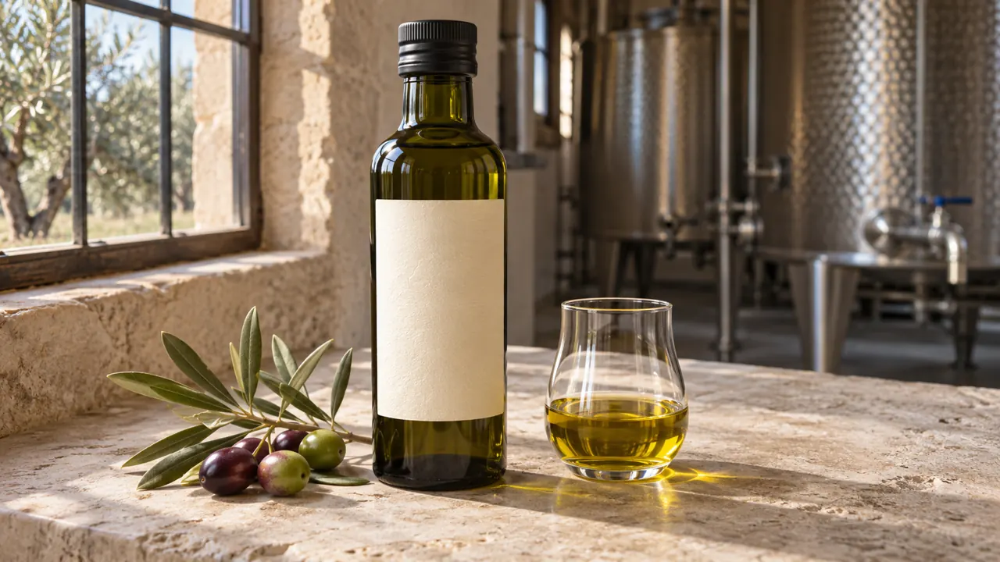

A Dutch grocer orders six thousand bottles of extra virgin olive oil from a packer in İzmir. The artwork shows a Turkish grove, gives the bottler's address and promises a single harvest. A week before printing, the packer proposes topping up the tank with oil left from a previous pressing season. The bottle, closure and barcode would stay exactly the same. Can the grocer approve the original proof? It needs two answers. Where did the oil originate, and can the supplier trace every litre to the harvest advertised on the label?
For a retail buyer, the fastest route to a decision is to follow one batch from the grove to the filled bottle. Identify the food category, where the olives grew, where the mill extracted the oil, which tanks supplied the filling line and what the customer will see on the shelf. Three locations often appear on a specification sheet. The harvesting country, milling country and bottling address answer different questions. A polished front label can conceal a genuine gap in the production records.
Establish which oil the label describes
EU olive oil marketing standards assign legal names to several categories. Extra virgin and virgin olive oils carry both their legal name and an indication of origin. Oils composed of refined and virgin olive oils, and olive-pomace oils, follow different category descriptions and must not display a place of origin under Article 8(2) of Delegated Regulation (EU) 2022/2104. This matters when a retailer commissions a family of matching bottles. The front design for an extra virgin oil may need substantial changes for a neighbouring product sold under the same house brand. Delegated Regulation (EU) 2022/2104, olive oil packaging and labelling, Articles 4–11
Ask the supplier for its specification, lot references and evidence supporting the declared category. A beautiful colour or pleasantly peppery finish at a purchasing meeting cannot establish that a batch meets the official characteristics. Commission Implementing Regulation (EU) 2022/2105 sets out conformity checks and analytical methods. Obtain evidence that corresponds to the oil intended for sale. If the laboratory sampled a different tank before blending, ask the quality manager how the final blend was assessed and what links the results to the delivered bottles. Implementing Regulation (EU) 2022/2105, conformity checks and analysis of olive oils
For extra virgin oil, Article 6 also prescribes a sentence describing the category. Give the designer the official wording in the destination language from the regulation. Keep a controlled translation of mandatory particulars alongside the artwork brief. An advertising phrase about superior flavour, hand picking or family tradition cannot discharge that requirement. A translator may need to see the precise legal category before choosing the right expression. Ask a reviewer familiar with food labelling in the destination market to initial the final language proof.
Follow the olives and the oil through three locations
Suppose fruit harvested in western Türkiye goes to a Turkish mill and the resulting oil is trucked in bulk to the Netherlands for bottling. On these facts, subject to the applicable origin rules, a Dutch bottling address does not confer Dutch origin. A label can identify the responsible food business and still communicate Turkish origin in the principal field of vision. The customer's view of the bottle should make both pieces of information intelligible. Keep transport documents for the bulk delivery together with the mill's batch allocation.
Change one fact. Olives harvested in one country travel across a border before extraction in another. Article 8(7) provides wording that identifies both the extraction location and the harvesting location. Give the translator those two countries in their correct order. Do not use that formula simply because finished oil moved abroad to be bottled. Pressing fruit produces oil, whereas filling glass containers packages a product that already exists. A freight invoice for tanker transport helps the buyer distinguish between these scenarios.
A third case involves finished virgin oils of different origins mixed before filling. Article 8 distinguishes blends involving only EU origins, only non-EU origins, and both. Select the prescribed indication that matches the actual blend. A Turkish and Tunisian blend and a Turkish and Spanish blend fall into different groups. The proportion of Turkish oil alone cannot settle the label. A supplier can change the correct group by adding a modest quantity of oil from another country, even if a taste panel detects no difference.
Ask a warehouse colleague to choose one finished lot and reconstruct its recipe. The inward records should identify the tanks received, amounts transferred, extraction sites and suppliers. Outward entries should identify the blend vessel and the packing run. Check the arithmetic in consistent units and explain ordinary losses or retained samples. If two tank numbers appear under the same local nickname, request a drawing or identifier map. The exercise can expose an innocent transcription error before a single incorrect origin statement reaches a supermarket.
Make the mandatory information work on a real bottle
Article 5 requires the legal name and applicable origin to appear together, written out in a homogeneous text block within the principal field of vision. A brand name on the front and a tiny country reference under the rear barcode can leave that requirement unmet. Print the proof at actual size, wrap it around the intended bottle and stand it on a shelf at eye level. Check what a shopper can read from a single angle. Curved shoulders, raised glass lettering and overlapping label edges can change the result.
Include the instruction to store the oil away from light and heat. Check the usual food particulars as well, including net quantity, date marking, the responsible operator's name and address and the nutrition declaration where required. Regulation (EU) 1169/2011 also governs language and legibility. Review the filled package in the language required for the market where it will be offered. A multilingual export carton can be helpful during distribution while doing little to fix a missing consumer declaration on an individual bottle. Food Information Regulation (EU) 1169/2011, Articles 8, 9 and 12–15
The retail pack normally has a maximum capacity of five litres and needs an opening system that cannot be sealed again as originally supplied once first opened. A cap that screws back on can have an irreversible first-opening feature, such as a breakable ring. Request a sample, open it and record how the first opening remains apparent. A six-litre catering can destined for a restaurant raises a separate question. Check the destination country's rules for collective establishments before assuming a larger container qualifies for that channel.
Test a harvest claim against the least convenient ingredient
A harvest year is voluntary under the EU rule for this imported extra virgin oil, but a business choosing to use it must satisfy Article 11. Every part of the contents must originate from that harvest. The permitted formats are the relevant marketing year, or the month followed by the year of harvest. For the latter format, the month corresponds to extraction. A bottling date, pressing appointment or delivery month should never be inserted automatically into a harvest field by a warehouse printer.
Return to the Dutch grocer's order. The filling plan requires three thousand litres. The packer has two thousand nine hundred litres from the advertised harvest and one hundred litres left from the preceding season. If mixed, the entire run loses the basis for that single-harvest claim. The grocer could reduce the run, wait for a documented delivery from the correct harvest, or remove the voluntary statement and reassess the rest of the packaging. Record the commercial choice before ink, adhesive and glass become sunk costs.
An honest date on the front still needs evidence. Ask for extraction records, tank movement logs and any cleaning or changeover documentation relevant to the batch. A substantially empty transfer line may still contain oil from the last production run. Ask the mill to explain how it segregates harvests and how operators record the start and end of filling. Avoid inventing a permitted tolerance for a claim framed around the entire contents. If evidence is incomplete, a plainer label may preserve the launch without making a claim the retailer cannot defend.
Check attractive optional terms separately
“Cold extraction” and “first cold pressing” describe different production methods under Article 10. For the first, qualifying virgin or extra virgin oil must be obtained below 27 degrees Celsius by percolation or centrifugation of olive paste. The second is reserved for a qualifying first mechanical pressing below that temperature using a traditional hydraulic press. Ask the mill which equipment it operates and what record supports the temperature. A modern centrifuge and a photograph of an antique stone wheel do not establish hydraulic pressing.
Suppose marketing wants a prominent low-acidity number. Article 10(d) links the maximum acidity expected by the minimum durability date to additional particulars, including maximum peroxide, wax and ultraviolet absorption values expected at that same date. The marks must meet the visual requirements. A laboratory figure taken on bottling day answers a narrower question. Before paying for new printing plates, consider whether the buyer needs this voluntary claim at all. If retained, align the measurement basis, expected end-date values, translation and placement with the specification.
Look beyond the glass. A shelf ticket may still say single estate after the label has been corrected. A web listing may show an obsolete front photograph or promise cold pressing in its search description. Under the general food information rules, most mandatory information must be available before a distance purchase is concluded, and all mandatory particulars must be available at delivery. If the oil forms part of a hamper with Turkish confectionery, the retailer must also review the other foods individually. Our guide to sesame and pistachio declarations in halva illustrates how to match a supplier recipe to the accompanying online description. Give the ecommerce editor the approved text, package images and effective lot or launch date so the physical and digital offers describe the same oil.
Release an identifiable print run
Build the approval around a particular stock code, destination, category, recipe version and batch plan. Attach the signed artwork with its revision number and the exact printer file. List who can authorise a new oil source, revised claim or switch of pack size. A supply agreement can require the packer to obtain written acceptance before making those changes. Agree who bears the cost of surplus labels, quarantined inventory or a second print run when the supplier changes a key fact after approval.
Where the packaging plant operates under an applicable approval regime, check whether Article 9 requires its alphanumeric identifier on the pack. Get the identifier from the approved establishment and compare it character by character with the proof. A supplier registration number, a postal district and an internal line reference may look similar to a designer. Explain the purpose of each code in the artwork instructions to prevent a well-intentioned substitution.
Before dispatch, have the packer photograph a filled bottle from the front, back and cap alongside the shipping case. Read the actual lot and date impression. A production coder can shift onto a dark seam or stamp characters upside down even when the digital proof was perfect. Compare the first and last samples if the run spans a shift change. Retain one labelled unit, or a suitable set of photographs and records, for answering customer or authority questions about the delivered lot.
If stock is already at a distribution centre, identify affected pallets before proposing a remedy. Determine whether the problem concerns only a voluntary harvest statement, a misleading origin or a deeper uncertainty about category. An independent assessment of the specific discrepancy may be needed. Discuss lawful relabelling, evidence and any required action with the responsible food business before goods return to the shelf. Keep records of the units examined and the version applied so older packaging cannot silently reappear in a later fulfilment batch.
The grocer can now give the printer an unambiguous instruction. If the packer uses only documented oil from the claimed harvest, retain the approved wording after checking the final tank allocation. If it mixes seasons, withdraw the harvest claim from the bottle and sales materials and approve a revised proof against the actual blend. Either route leaves the buyer with an identifiable product, a defensible origin statement and a package a customer can understand at a glance.
Frequently asked questions
Can oil bottled in the EU retain Turkish origin?
Bottling alone does not change the origin of an oil. Establish where the olives were harvested and the oil extracted, then apply Article 8 to the documented lot.
Can the label retain a harvest year after topping up from a previous season?
Article 11 requires the entire contents to come from the stated harvest. Change the filling plan or remove the claim and reassess the final artwork.